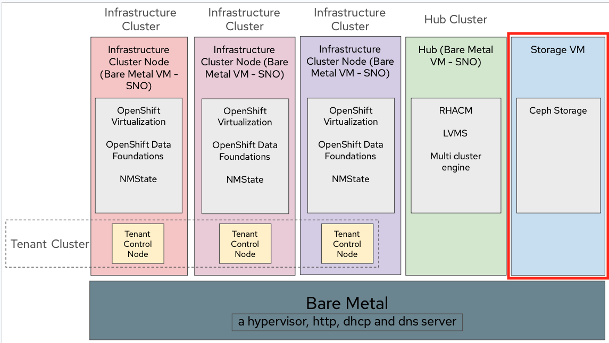

Storage VM Deployment
| You can refer how to configure manually i.e. without automation in at the end appendix chapter. |
In this section, you will be creating one KVM with name storage.

Prerequisites
-
Download the rhel9.X QCOW2 image from the Red Hat Customer Portal to your laptop/desktop.
-
Use Secured copy (scp) command to copy the rhel9.X QCOW2 image from your laptop/desktop to hypervisor and then place it in
/var/lib/libvirt/imagesdirectory.Sample output:[user@laptop]$ scp Downloads/rhel-9.4-x86_64-kvm.qcow2 lab-user@14X.XX.YY.Z:. [user@laptop]$ ssh lab-user@14X.XX.YY.Z [lab-user@hypervisor ~]$ sudo su - [root@hypervisor ~]# mv /home/lab-user/rhel-9.4-x86_64-kvm.qcow2 /var/lib/libvirt/images/rhel-9.4-x86_64-kvm.qcow2
FIX this - Try Automation playbook
Storage VM Deployment
You can either use the setup_storage.yaml playbook to create QCOW2 image for storage VM and then deploy storage VM on the hypervisor.
Ensure you are in ansible directory of the repo.
ansible-playbook playbooks/setup_storage.yaml -vvv | tee -a /tmp/setup_storage.logTha above command results in verbose play output.
tee -a command redirects the output to /tmp/setup_storage.log log file.
In case of failure, /tmp/setup_storage.log log file can be used for troubleshooting the issue.